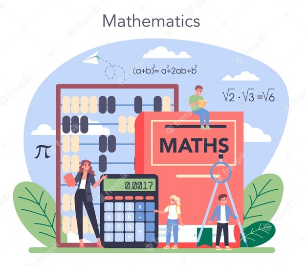
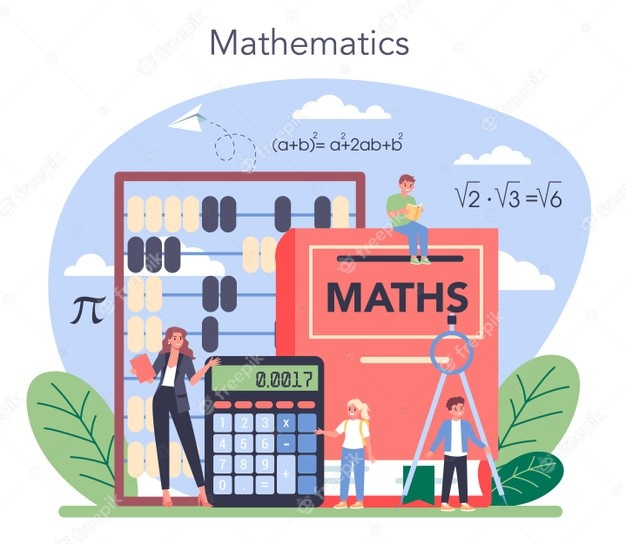

La geometría de las lentes progresivas
Las llamadas ecuaciones de compatibilidad, recientemente descubiertas, establecen la calidad visual alcanzable con estas lentes
Leer masEn la vida diaria: Donde se realizan cálculos matemáticos con gran asiduidad, o mediciones y comparaciones, la matemática en nuestras vidas que muchos expertos consideran la ausencia de nociones matemáticas como una variante del analfabetismo.

Isócrates era muy ambicioso a la hora de creer que las matemáticas
y la filosofía iban bien de la mano. A primera vista, las mates
son una materia totalmente distinta: al igual que la lengua española
o la literatura, son disciplinas para las que hay que tener afinidad
(y si no se tiene, tampoco pasa nada).
 

Las llamadas ecuaciones de compatibilidad, recientemente descubiertas, establecen la calidad visual alcanzable con estas lentes
Leer masUn texto cuneiforme de la antigua Babilonia adelanta a Pitágoras por un milenio
Leer masEstas estructuras matemáticas aparentemente sencillas siguen generando nuevas preguntas y avances de investigación casi 90 años después de su descubrimiento
Leer masAutora: Andrea Nova 27/08/2021